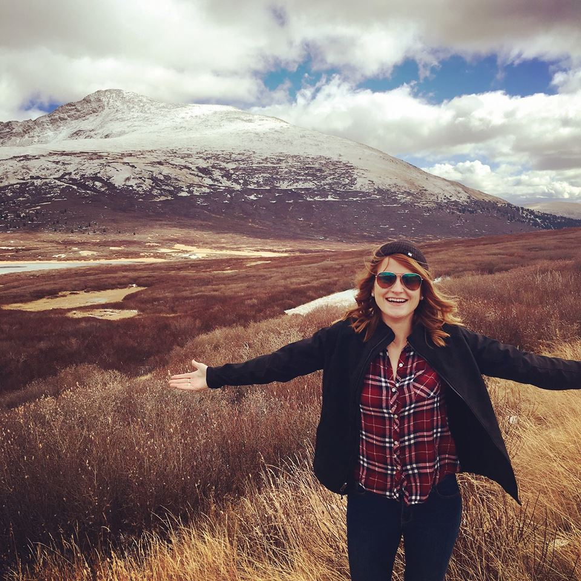

About Meghan Petiprin

I am a native Michigander and a fledgling web developer. I am eager to embark on this new challenge of becoming a web developer in order grow my skillset in a high-demand field and, in tune with the Amy Poehler quote below, to push myself out of my comfort zone for the sake of continued professional and personal growth. I have a strong desire to leverage technology to create better experiences for users as well as a deep interest in developing web platforms that serve as instruments for addressing social issues. My talents related to web development include resourcefulness in the face of challenges, collaborative group work, and creative content writing.
Here are five random things about me:
- I am a known initiator of spontaneous dance parties.
- I have a cat named Dobby the House Cat; she is sweet and annoying like her Harry Potter character namesake.
- My favorite TV show is Parks & Rec, and I quote it regularly.
- I served as a group leader on study abroad programs in Australia, Costa Rica, Rwanda, and South Africa. Such work involved rescuing students from ocean currents, retrieving geckos from screaming students' hotel rooms, dealing with strange health issues, and mostly learning A LOT about myself, leadership, and the importance of flexibility.
- As a book drunkard and trivia night enthusiast, I am passionate about learning as much as possible about pretty much everything - from history to science to sociology to utterly random stuff.
“Great people do things before they're ready. They do things before they know they can do it. Doing what you're afraid of, getting out of your comfort zone, taking risks like that- that's what life is...” ― Amy Poehler